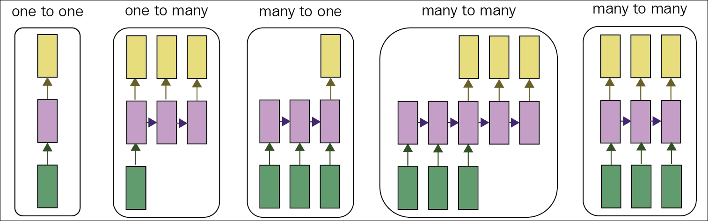

I think the brain is essentially a computer and consciousness is like a computer program. It will cease to run when the computer is turned off. Theoretically, it could be re-created on a neural network, but that would be very difficult, as it would require all one's memories. | ||
| --Stephen Hawking | ||
To solve every problem, people do not initiate their thinking process from scratch. Our thoughts are non-volatile, and it is persistent just like the Read Only Memory (ROM) of a computer. When we read an article, we understand the meaning of every word from our understanding of earlier words in the sentences.
Let us take a real life example to explain this context a bit more. Let us assume we want to make a classification based on the events happening at every point in a video. As we do not have the information of the earlier events of the video, it would be a cumbersome task for the traditional deep neural networks to find some distinguishing reasons to classify those. Traditional deep neural networks cannot perform this operation, and hence, it has been one of the major limitations for them.
Recurrent neural networks (RNN) [103] are a special type of neural network, which provides many enigmatic solutions for these difficult machine learning and deep learning problems. In the last chapter, we discussed convolutional neural networks, which is specialized in processing a set of values X (For example, an image). Similarly, RNNs are magical while processing a sequence of values, x (0), x (1),x(2),..., x(τ-1). To start with RNNs in this chapter, let us first place this network next to convolutional neural networks so that you can get an idea of its basic functionalities, and to basically know about this network.
Convolutional neural networks can easily scale to images with large width, height, and depth. Moreover, some convolutional neural networks can also process images with variable sizes.
In contrast, recurrent networks can readily scale to long sequences; also, most of those can also process variable length sequences. To process these arbitrary sequences of inputs, RNN uses their internal memory.
RNNs generally operate on mini-batches of sequences, and contain vectors x (t) with the time-step index t ranging from 0 to (τ-1). The sequence length τ can also vary for each member of the mini-batch. This time-step index should not always refer to the time intervals in the real world, but can also point to the position inside the sequence.
A RNN, when unfolded in time, can be seen as a deep neural network with indefinite number of layers. However, compared to common deep neural networks, the basic functionalities and architecture of RNNs are somewhat different. For RNNs, the main function of the layers is to bring in memory, and not hierarchical processing. For other deep neural networks, the input is only provided in the first layer, and the output is produced at the final layer. However, in RNNs, the inputs are generally received at each time step, and the corresponding outputs are computed at those intervals. With every network iteration, fresh information is integrated into every layer, and the network can go along with this information for an indefinite number of network updates. However, during the training phase, the recurrent weights need to learn which information they should pass onwards, and what they must reject. This feature generates the primary motivation for a special form of RNN, called Long short-term memory (LSTM).
RNNs started its journey a few decades back [104], but recently, it has significantly become a popular choice for modeling sequences of variable length. As of now, RNN has been successfully implemented in various problems such as learning word embedding [105], language modelling [106] [107] [108], speech recognition [109], and online handwritten recognition [110].
In this chapter, we will discuss everything you need to know about RNN and the associated core components. We will introduce Long short-term memory later in the chapter, which is a special type of RNN.
The topic-wise organization of this chapter is as follows:
You might be curious to know the specialty of RNNs. This section of the chapter will discuss these things, and from the next section onwards, we will talk about the building blocks of this type of network.
From Chapter 3 , Convolutional Neural Network, you have probably got a sense of the harsh limitation of convolutional networks and that their APIs are too constrained; the network can only take an input of a fixed-sized vector, and also generates a fixed-sized output. Moreover, these operations are performed through a predefined number of intermediate layers. The primary reason that makes RNNs distinctive from others is their ability to operate over long sequences of vectors, and produce different sequences of vectors as the output.
"If training vanilla neural nets is optimization over functions, training recurrent nets is optimization over programs" | ||
| --Alex Lebrun | ||
We show different types of input-output relationships of the neural networks in Figure 4.1 to portray the differences. We show five types of input-output relations as follows:

Figure 4.1: The rectangles in the figure represent each element of the sequence vector, the arrows signify the functions. Input vectors are shown in red, and output vectors are in blue. The green color represents the intermediate RNN's state. Image taken from [111].
Operations that involve sequences are generally more powerful and appealing than networks with fixed-sized inputs and outputs. These models are used to build more intelligent systems. In the next sections, we will see how RNNs are built, and how the network unites the input vectors with their state vector with a defined function to generate a new state vector.